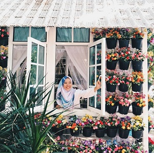

|  |
About The Author My name is Nurul Syilatulnaim Binti Azhar and I'm 20 years old. Most of my friend call me Syila but my family call me Lala. I was born on 13th April 2000 at Hospital Kulim, Kedah. I have 4 siblings including me, 2 brothers and 2 sisters. I'm the third one in the family. I live in Kulim, Kedah. I am a fresh diploma graduate from Universiti Teknologi Mara (UiTM) in the Information Management course. The strength I have is that I am a fast learner and can work well in groups. I can also communicate well by being able to impress customers and attract their interest. You can read more about my educational background here. |
What people thought about me Some people say that I’m weird and eccentric, and they’re probably right. But what’s life without a little weirdness, no? After all, where’s the fun in living a normal life? Anyways, I suck at writing about myself, you’ll probably learn more about me through my website. |
About The Website Syila's website started off in December 2020 as my personal website. It changed from being an online diary of my life to being a medium for me to share my memories and experiences with people. This website is also part of the assignment for IMD311 subject. |
Syila Sing Well, singing can relieve stress. Hopefully you can enjoy my singing. :) |